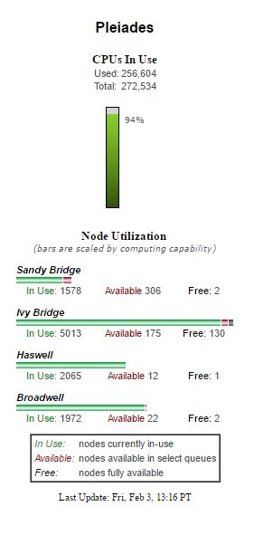

System Architecture
- Manufacturer: SGI
- 161 racks (11,472 nodes)
- 7.25 Pflop/s peak cluster
- 5.95 Pflop/s LINPACK rating (#13 on November 2016 TOP500 list)
- 175 Tflop/s HPCG rating (#9 on November 2016 HPCG list)
- Total CPU cores: 246,048
- Total memory: 938 TB
-
2 racks (64 nodes total) enhanced with NVIDIA graphics processing units (GPUs)
- 184,320 CUDA cores
- 0.275 Pflop/s total
-
1 rack (32 nodes total) enhanced with Intel Xeon Phi co-processors (MICs)
- 3,840 MIC cores
- 0.064 Pflop/s total
Interconnects
- Internode: InfiniBand®, with all nodes connected in a partial hypercube topology
- Two independent InfiniBand® fabrics
- InfiniBand® DDR, QDR and FDR
- Gigabit Ethernet management network
Storage
- SGI InfiniteStorage NEXIS 9000 home filesystem
- 29 PB of RAID disk storage configured over several cluster-wide Lustre filesystems

Operating Environment
- Operating system: SUSE Linux
- Job scheduler: Altair PBS Professional
- Compilers: Intel and GNU C, C++ and Fortran
- MPI: SGI MPT